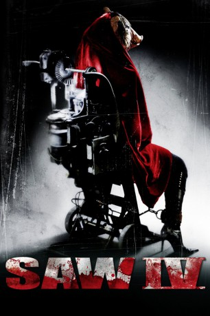

#1910 Saw 4
Alternativ: Saw IV
 
 IMDB-Wertung: 5.9 / 10
IMDB-Wertung: 5.9 / 10  Metascore: 36
Metascore: 36 
Jigsaw und seine Gehilfin Amanda sind tot, aber das mörderische Treiben geht weiter. Nach dem Tod an Detective Kerry helfen die FBI-Profiler Agent Strahm und Agent Perez dem Revierchef Hoffman, Jigsaws letztes grausames Spiel zu rekonstruieren. Doch dann wird Commander Rigg entführt und in eins von Jigsaws mörderischen Puzzles verwickelt. Die Hinweise deuten auf Jigsaws Ex-Frau Jill...
Jahr: 2007
Dauer: 93 Minuten
FSK: 18
Land: USA Studio: LionsgateTonspuren:
Untertitel:
Auflösung: 720p (1280x720) Größe: 4474 MB
Genre: Horror, Mystery
Regisseur: Darren Lynn Bousman
Drehbuch: Patrick Melton, Marcus Dunstan, Patrick Melton, Marcus Dunstan, Thomas Fenton
Soundtrack: Charlie Clouser
Darsteller:
Datei: X:\FSK18-Collections\Saw\Saw 4 (2007, FSK18, 1280x720).mkv seit 01.09.2015
Festplatte: FSK18
 Es gibt insgesamt 11 Filme in der Gruppe 'FSK18-Collections\Saw'
Es gibt insgesamt 11 Filme in der Gruppe 'FSK18-Collections\Saw'